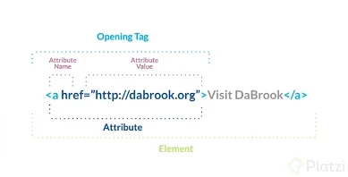

Etiquetas: son la representación básica de la información en un documento html. Sirven para crear y organizar el contenido.
Van entre "mayor que" y "menor que", la mayoría tienen una etiqueta de inicialización y otra de finalización entre las cuales se coloca un contenido,

aunque hay otras con solo inicialización llamadas self closing o etiqueta vacía.
Como buena práctica se suele colocar un slash al final de estas etiquetas sin cierre (ejemplo img="..." />)
Las etiquetas no son case sensitive, o sea que no importa si se escriben en mayúsculas o minúsculas.
Atributos: son los textos que acompañan a las etiquetas, estas se colocan dentro de la etiqueta de inicialización justo antes del "mayor que" (>),
son case sensitive o sensibles a reconocimiento entre mayúsculas y minúsculas.
Elementos de bloque: son etiquetas cuyo contenido se coloca entre su inicialización y finalización.
Elementos de lista: son etiquetas que se utilizan adentro de los elementos de bloque en las líneas del contenido.
La etiqueta br (breaking rule) es self closing y coloca un salto de línea.
La etiqueta u se inicializa y se finaliza, nos permite subrayar texto (underline).
La etiqueta i se inicializa y se finaliza, nos permite usar texto en cursiva (itálica).
Las etiquetas b y strong visualmente son iguales, se inicializan y se finalizan, pero...
b solo convierte texto en negritas (bold), en cambio,
strong hace énfasis en el texto para que el usuario pueda buscar en mi buscador web (no abusar de esta etiqueta)
span con su inicialización y finalización se puede cambiar el color de fondo y del texto especificándolos dentro de la apertura
(style="color: color de texto; background: color de fondo"), *todo el código en minúsculas*
div con su inicialización y finalización hace lo mismo que span pero con párrafos completos, se puede usar solo en títulos, en partes de párrafos o párrafos completos.
cite con su inicialización y finalización nos permite agregar un autor de alguna etiqueta, aparece en cursiva, se inicializa y finaliza
hr (horizontal rule) no se finaliza, solo se inicializa donde se desee agregar una separación entre elementos de la página, indica un cambio de tema, sirven para dar estructura a la página.
wbr (word breaking rule) no se finaliza, solo se inicializa colocándolo entre una palabra. Representa una oportunidad de quiebre de línea.
Puede ser muy útil en situaciones donde la comprensión de la información puede verse afectada por un quiebre de línea mal ubicado. (ejemplo: i=0< wbr > a=1< wbr > x=3)
code con su inicialización y finalización se utiliza para indicar que entre estas etiquetas hay un código.
small con su inicialización y finalización se utiliza para textos poco importantes
sub (de subíndice) con su inicialización y finalización nos permite colocar subíndices, por ejemplo H2O
sup (de superíndice) con su inicialización y finalización nos permite colocar superíndices, por ejemplo 20=1.
em (de emphasis) con su inicialización y finalización se usa para textos importantes.
blockquote (bloque de cita) con su inicialización y finalización indica que el texto es una cita textual hacia algún artículo.
pre (de preformat)
el texto incrustado entre la inicialización y finalización de esa etiqueta
respeta los saltos de línea, espacios y sangrías
Referencias de colores:
https://html-color-codes.info
http://www.manualweb.net/html/colores-html/
Referencias de etiquetas:
https://allthetags.com/
http://html5doctor.com/
https://developer.mozilla.org/en-US/docs/Web/HTML/Element